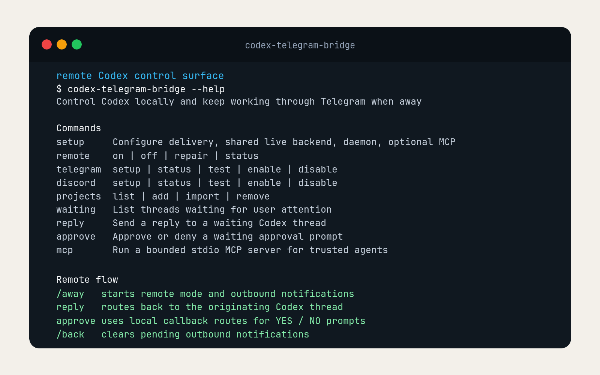

Problem
Prompts could sit on the desktop.

Ownership
Chat should not become an open door.
The bridge
Away mode opens remote replies. Back mode closes them.
Reply routing
Chat never needs private details.
Approval path
Approve or deny, and the action is recorded.
Result
Replies, approvals, and delivery stay tied to my machine.